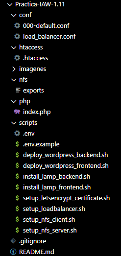
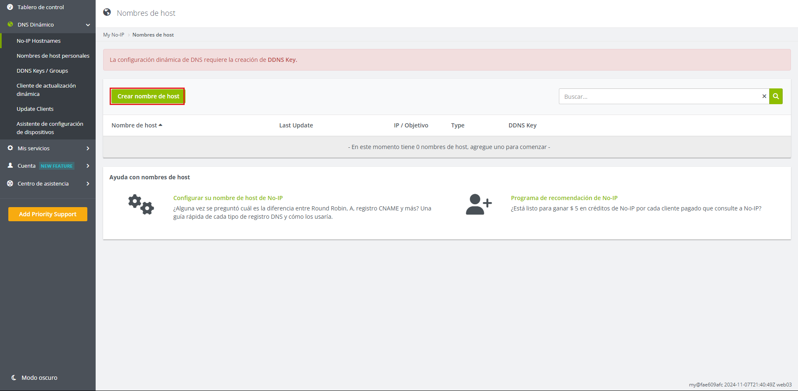
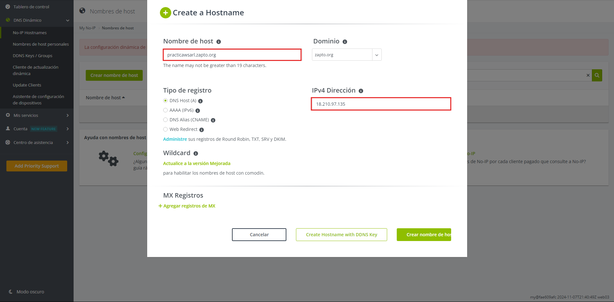
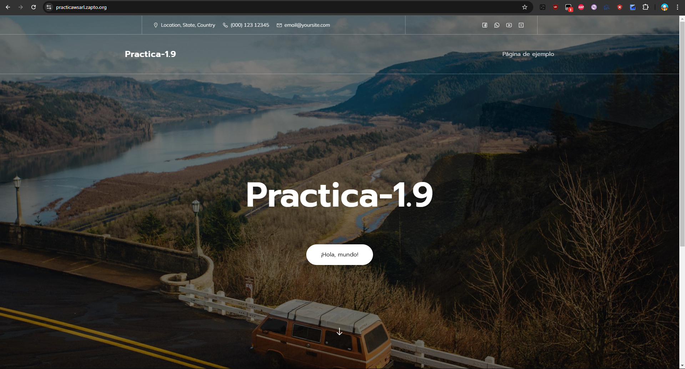
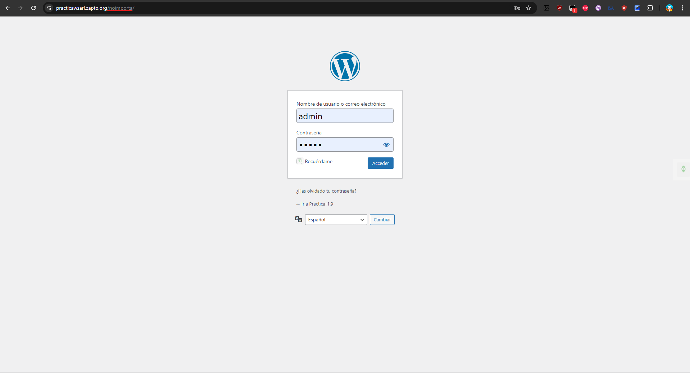
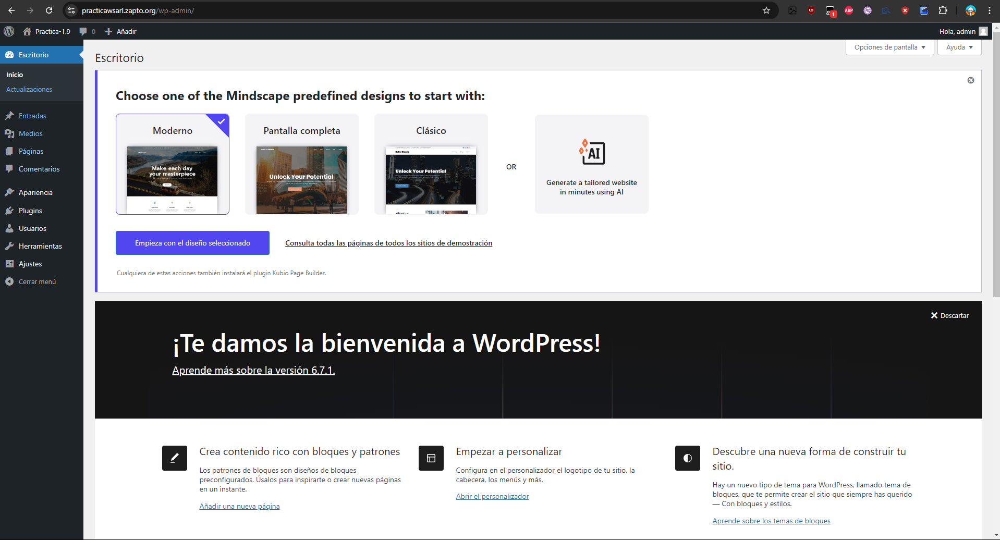

Practica-IAW-1.11- Implantación de Wordpress en AWS utilizando una arquitectura de tres niveles
Pasos previos a la instalación
para la instalación vamos a tener que crear la siguiente estructura de directorios y archivos:

Una vez creados los archivos y directorios, procedemos a la implantación de Wordpress en AWS utilizando una arquitectura de tres niveles.
Implantación de Wordpress en AWS utilizando una arquitectura de tres niveles
1. Creamos un nombre de dominio para nuestro servidor con la web no-ip
Paso 1. Crear el nombre del dominio
Para crear el nombre de dominio en la página, tenemos que registrarnos y dirigirnos al sitio que muestra la captura y darle a crear nombre de host.

Una vez dado al recuadro de crear el nombre, nos sale un asistente para poner el nombre de host que queramos, el dominio que queremos que lleve, la dirección ip de la máquina o pc que queremos que tenga ese nombre de host y el tipo de registro que queremos que lleve, en nuestro caso es el DNS Host A

Hecho esto ya podemos automatizar el proceso de la implantación de Wordpress en AWS utilizando una arquitectura de tres niveles
1.1 Infraestructura necesaria
La infraestructura necesaria está compuesta de cuatro máquinas virtuales, una para el balanceador de carga (Load Balancer), dos como frontales web (Front-End) y una como servidor de base de datos MySQL (Back-End).
- Servidor NFS (Esta práctica, Práctica-IAW-1.11-NFS_server)
- Balanceador. (Práctica-IAW-1.10-LoadBalancer).
- Frontal Web 1/Cliente NFS. (Práctica-IAW-1.9-Frontend).
- Frontal Web 2/Cliente NFS. (Práctica-IAW-1.10-frontend2).
- Servidor de Base de Datos MySQL. (Práctica-IAW-1.9-Backend).
2. Creación del archivo setup_nfs_server para el servidor NFS
Paso 1. Importamos el archivo de variables y mostramos los comandos que se van ejecutando
source .env
set -ex
Paso 2. Actualizamos los repositorios
apt update
Paso 3. Actualizamos los paquetes
apt upgrade -y
Paso 4. Instalamos el servidor NFS
apt install nfs-kernel-server -y
Paso 5. hacemos el directorio
mkdir -p /var/www/html
Paso 6. Modificamos el grupo y el propietario del directorio
chown nobody:nogroup /var/www/html
Paso 7. copiamos la plantilla exports a /etc/exports
cp ../conf/load_balancer.conf /etc/nginx/sites-available
[!IMPORTANT]
El archivoexportslo tenemos que hacer nosotros en la carpetaconfy moverlo al directorio de sitios disponibles de nginx para que lo vea y lo habilite para su funcionamiento. A continuación, pongo el contenido del ficheroexports:bash /var/www/html FRONTEND_NETWORK(rw,sync,no_root_squash,no_subtree_check)
Paso 8. Reemplazamos el valor de la plantilla de /etc/exports
sed -i "s#FRONTEND_NETWORK#$FRONTEND_NETWORK#" /etc/exports
[!IMPORTANT]
Las variables que irán apareciendo durante los pasos están todas definidas en el archivo.envy en.env.examplese pueden ver las variables que hay que tener definidas.
Paso 9. Reiniciamos el servicio de NFS
systemctl restart nfs-kernel-server
3. Creación del archivo setup_nfs_client para los clientes NFS
Paso 1. Importamos el archivo de variables y mostramos los comandos que se van ejecutando
source .env
set -ex
Paso 2. Actualizamos los repositorios
apt update
Paso 3. Actualizamos los paquetes
apt upgrade -y
Paso 4. Instalamos el cliente NFS
apt install nfs-common -y
Paso 5. Montamos el directorio
mount $NFS_SERVER_IP:/var/www/html /var/www/html
Paso 6. Cambiamos la variable de /etc/fstab
sed -i '$a\172.31.28.95:/var/www/html /var/www/html nfs auto,nofail,noatime,nolock,intr,tcp,actimeo=1800 0 0' /etc/fstab
Comprobación de que WordPress en la arquitectura de tres niveles funciona



Sale el nombre de la Práctica 1.9 porque no le he cambiado el nombre a la página.